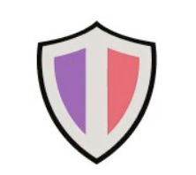
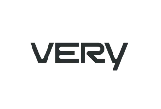
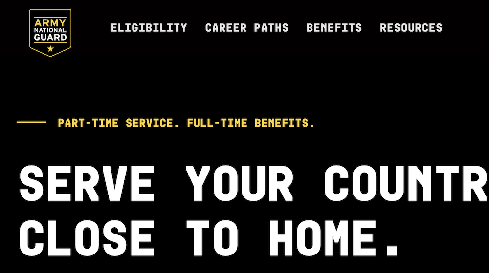
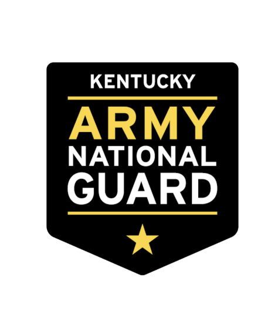

I lead teams that turn complex enterprise challenges into award-winning, AI-driven product experiences. My work is grounded in research, metrics, and rapid experimentation. I build cultures where creativity, technical depth, and smart decision-making thrive together.
Fulfillment has come from enabling teams to rise up with innovation and efficiency while building products. I strive to build the right relationship with each team member to help them find success in their own paths.
I build high-trust, high-performing design teams and the systems that guide them. My leadership turns opinion into evidence, research into strategy, and AI-driven experimentation into measurable product outcomes.
This is how people I work with describe that experience:
I truly appreciate how often Tyrale takes the time to provide constructive feedback on how I can become the best version of myself. I appreciate his ability to remove emotion and help me see things objectively to ultimately derive the best solution.
Direct report — Nikki Davis, Senior UX Designer
Tyrale brings a strong mix of opinion, humor, and passion to conversations. He takes time to compliment and constructively critique his fellow co-workers. He is not afraid to deliver a tough conversation, and yet does not make it personal.
Executive — Brandon Carl, Chief Product Officer
I respect Tyrale's opinions and welcome his feedback. He provides positive feedback when appropriate, but certainly doesn't overdue it. I really appreciate this aspect of Tyrale's feedback. His constructive feedback is important, as he identifies issues and raises the concern.
Design leadership — Josh Goodwin, Senior Principal UX Designer
There have been numerous times where the design has been challenged with feature parity. Each time, Tyrale has devised creative solutions to improve the user experience, and set the product up for success. His ability to think through problems and features with the broader context in mind has led to simple yet robust designs.
Product management — Jena Acuff, Director of Product Management
Tyrale strives for excellence in everything he does. This is evident in the tools he chooses, the processes he creates, and his work itself. He has taken an active role in leading others forward. He knows what “great” looks like, and can infuse the drive for excellence in others. Consistently channels frustration towards transformation.
Executive — Jeff Franks, President
Tyrale has done a fantastic job leveraging product design principles to persuade the right people to produce optimal results. By focusing on intent and removing emotion from the equation, all people involved can objectively debate how best to solve the problem at hand.
Sales Executive — Kate Palazzolo, VP Solution Sales
Tyrale doesn't bring his own agenda. Rather, he brings his talents towards helping us win our market, and the hearts and minds of our customers.
Executive — Jim Hewitt, EVP, Solutions
The majority of my projects over the last few years are underneath layers of verbose NDA's. Here is a succinct list of these projects, with product names witheld.
Industry Agnostic Design System
The unique challenge here was a system that could support multiple use cases across different industries. FinTech, Customer Support, Healthcare, Human Trafficking, and Community moderation are among the high level industry categories. Each with their respective regulatory and configuration needs.
Enterprise Remote User Research Program
Limited access to user data, end users globally located, and bespoke on-premise configurations created a challenge when creating a User Research program from zero. Solving the problem required some creative problem solving, layered over logistic hurdles, and resulted in a third-party integration on some cheap Chromebooks.
AI/ML Model Building
Building quality models for Artificial Intelligence and Machine Learning is extensively labor intensive. A single model can require hundreds of user hours just to get to the first iteration. A tool was needed to help Data Scientist and Subject Matter Experts collaboratively iterate and build models.
AI/ML Surveillance Platform
Teaching a machine to understand Human communication is challenging. The application here is a tool that allows the machine to alert users to concerning communication language and patterns of monitored users at scale.
AI/ML Electronic Health Record
The EHR has grown into a mess with the heavy regulation, insurance reqs, complicated interactions, and developer lead design. This project was a radical departure from the standard. Using simplified workflows, user centering design, and Machine Learning I created a new paradigm for Physician software.
Smarsh
Conduct Surveillance uses patented AI to turn all forms of communications and structured data into discoverable, understandable, and actionable insights.
LinkDigital Reasoning User Research
A research process that converts user interactions and feedback into useable, trackable, cross-referenced data points available to the entire team.
LinkDigital Reasoning
Conduct Surveillance uses patented AI to turn all forms of communications and structured data into discoverable, understandable, and actionable insights.
Link
Startbox
Prevent wrong-site surgery and capture near misses through a real-time, data-driven approach.
Link
Very
28 Design Sprints in 2 years for various startups. Fully distributed team in an extremely fast paced environment.
Link

Army National Guard
Built and maintained the online presence of the Army National Guard, including the site, socials, and online enlistment web app.
LinkFor speaking, advisory, or leadership roles, email hello@tyrale.com.